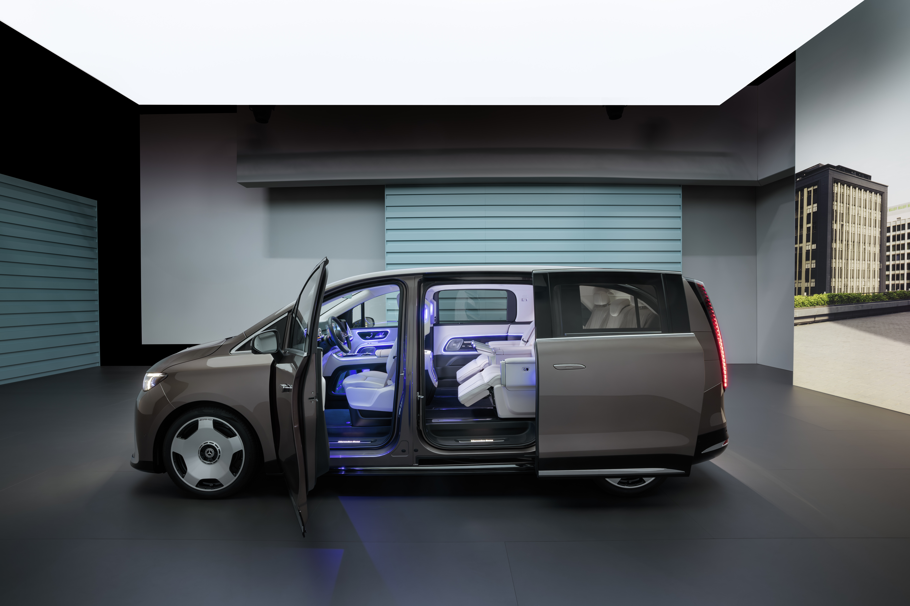
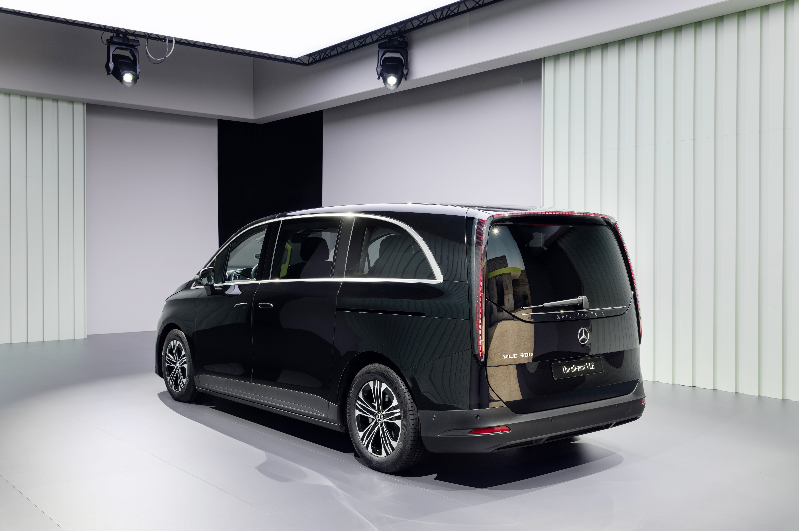
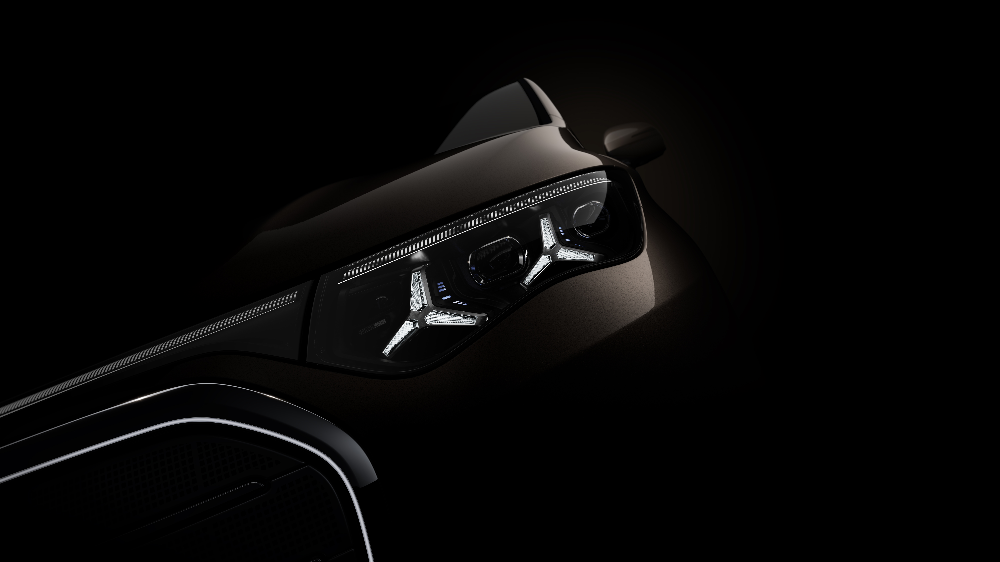

32 英寸、多位乘客，车上的影院体验意味着什么？
下一代 VAN.EA 平台的 V-Class 定位与 S 级截然不同，后排往往是家人、朋友或同事共同乘坐，核心诉求是共享体验。因此后排搭载一块 32:9 比例的 Cinema Screen 超宽屏，这在车载领域没有先例。一块屏幕覆盖整个后排视野，默认状态下是所有人共同享受的"影院"，同时支持分屏模式满足各自活动的需求。系统还需适配 11.6"/13.1"/31.3"/55"/16.4" 等多种屏幕尺寸，从标准 VAN 到 Maybach VAN 全线覆盖。
共享优先，分屏为辅
一块大屏的设计出发点是"共享优先"。默认状态下整块屏幕呈现统一内容，全车后排乘客一起看电影、一起听音乐，这是 VAN 场景中最自然的使用方式。Cinema Mode 一键联动灯光调暗、遮阳帘关闭、座椅调至观影角度，从"看视频"升级为"一起进影院"。
当乘客想要各自做不同的事，分屏模式将 32:9 屏幕一分为二，左右各自拥有完整的 16:9 区域、独立光标、独立内容流。蓝牙耳机私密音区让每位乘客连接独立耳机实现声音隔离，一人看电影不影响另一人休息。这种"共享为主、分屏为辅"的逻辑和 S 级"天然独立"的双屏架构形成了清晰的产品分野。
内容生态集成爱奇艺、B站、喜马拉雅、QQ 音乐等主流平台，HDMI 和 Wireless Casting 支持投屏。AI 个性化推荐（For You）基于 PUX 引擎按兴趣智能排序。Continue Watching 无缝续播记忆上次进度。浏览时聚焦的影片自动切换为全屏背景（模糊大图加渐变遮罩），营造沉浸预览感。
其他场景模式：Sleep Mode 灯光熄灭、温度降低、屏幕展示装饰画面或关闭、座椅调至放松角度。Decorative Image 非使用时展示精选艺术图片，大屏不再是黑色死屏。Kids Mode 摄像头识别儿童后自动触发内容过滤和时长控制。

沉浸不打断，控制不离开
Control Panel 是系统级快捷控制层，核心理念是"沉浸不打断，控制不离开"。以浮层形式覆盖在当前内容之上，视频不暂停、音乐不中断，调节完关闭浮层即刻回到之前状态。RC 专用按键一键唤出，无需返回主页或进入设置层级。
采用 Block 网格布局，功能模块根据车型配置灵活增减重排，覆盖亮度、设备管理（蓝牙耳机连接/断开）、网络、隐私、儿童安全、装饰画面等全维度快捷控制。音量调节作为独立轻量化 Pop-up，调 RC 滚轮时自动显示、3秒无操作消失。高频设置同步在 RC 屏幕上显示，实现"看 RC 调 RSE"的直觉操作。

共享与分屏的无缝切换
交互上，共享模式和分屏模式的切换要做到自然无缝，不是一个需要深思的"设置选项"，而是根据使用场景水到渠成的切换。分屏时两侧内容和操控完全独立，合屏时自然融合为统一体验。远距离操控通过"遥控器"这个普适隐喻解决，手持和底座两种姿态自然过渡。
视觉上，Cinema Screen 的 UI 强调影院感，大面积暗色背景、内容优先布局、最小化系统干扰。Control Panel 浮层式设计保持"内容层加控制层"分离的双层架构。场景模式联动的细腻度体现在 Cinema Mode 不只是切换主题，而是灯光、遮阳帘、座椅角度、屏幕亮度多维度同步编排。Screen Position 屏幕平移后 UI 元素跟随适配保证任何位置都有最佳体验。
